Note
Go to the end to download the full example code.
Time-Frequency DSS: Spectrogram Masking.#
This example demonstrates DSS for extracting transient oscillatory bursts using time-frequency (TF) domain constraints via spectrogram masking.
We cover SpectrogramBias (linear) and SpectrogramDenoiser (nonlinear) for isolating activity that is sparse in the TF domain.
The examples move from synthetic spindle-like bursts to fixed-mask DSS, adaptive spectrogram denoising, and a real MEG gamma-burst example.
- Authors: Sina Esmaeili (sina.esmaeili@umontreal.ca)
Hamza Abdelhedi (hamza.abdelhedi@umontreal.ca)
Imports#
import matplotlib.pyplot as plt
import mne
import numpy as np
from mne.datasets import somato
from scipy import signal as sp_signal
from mne_denoise.dss import DSS, IterativeDSS
from mne_denoise.dss.denoisers import SpectrogramBias, SpectrogramDenoiser
from mne_denoise.viz import (
plot_channel_time_course_comparison,
plot_component_spectrogram,
plot_component_summary,
plot_signal_overlay,
plot_spectrogram_comparison,
plot_time_frequency_mask,
)
Part 0: Synthetic Transient Bursts (Sleep Spindles)#
Simulate 12 Hz spindle bursts embedded in noise
print("--- Part 0: Synthetic Spindle Bursts ---")
rng = np.random.default_rng(42)
sfreq = 250 # Hz
n_seconds = 10
n_times = n_seconds * sfreq
times = np.arange(n_times) / sfreq
# Background noise (broadband)
noise = rng.normal(0, 1.0, n_times)
# Spindle bursts at specific times
spindle_freq = 12.0 # Hz
envelope = np.zeros_like(times)
# Burst 1: 2-3 seconds
mask1 = (times >= 2) & (times < 3)
envelope[mask1] = np.hanning(mask1.sum())
# Burst 2: 7-8 seconds
mask2 = (times >= 7) & (times < 8)
envelope[mask2] = np.hanning(mask2.sum())
signal_spindle = envelope * np.sin(2 * np.pi * spindle_freq * times) * 3.0
# Mixed data
data_mixed = signal_spindle + noise
# Visualize
fig, axes = plt.subplots(3, 1, figsize=(14, 8), sharex=True)
axes[0].plot(times, signal_spindle, "b", linewidth=1.5, label="Clean Spindle")
axes[0].set_title("Ground Truth: 12 Hz Spindle Bursts")
axes[0].set_ylabel("Amplitude")
axes[0].legend()
axes[0].grid(True, alpha=0.3)
axes[1].plot(times, noise, "gray", alpha=0.7, label="Broadband Noise")
axes[1].set_title("Noise")
axes[1].set_ylabel("Amplitude")
axes[1].legend()
axes[1].grid(True, alpha=0.3)
axes[2].plot(times, data_mixed, "r", alpha=0.7, label="Mixed (Signal + Noise)")
axes[2].set_title("Observed Data")
axes[2].set_xlabel("Time (s)")
axes[2].set_ylabel("Amplitude")
axes[2].legend()
axes[2].grid(True, alpha=0.3)
plt.tight_layout()
plt.show()
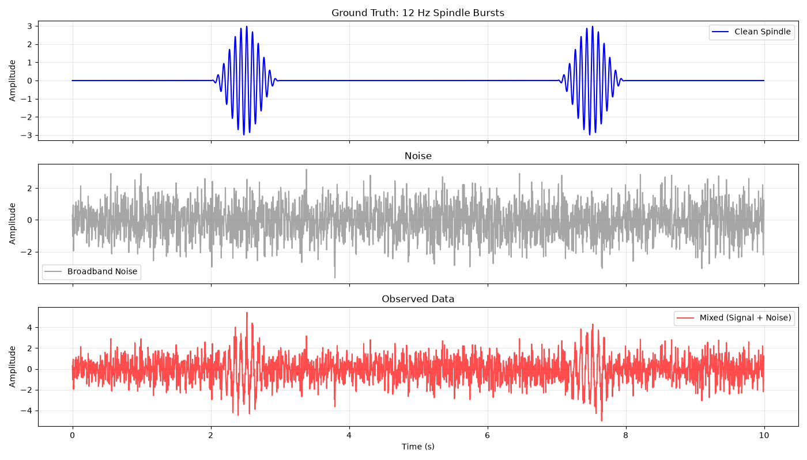
--- Part 0: Synthetic Spindle Bursts ---
Visualize Time-Frequency Representation#
Compute spectrogram to see bursts in TF domain
f, t, Sxx = sp_signal.spectrogram(data_mixed, fs=sfreq, nperseg=128, noverlap=96)
plt.figure(figsize=(12, 5))
plt.pcolormesh(t, f, 10 * np.log10(Sxx), shading="gouraud", cmap="viridis")
plt.colorbar(label="Power (dB)")
plt.ylabel("Frequency (Hz)")
plt.xlabel("Time (s)")
plt.title("Spectrogram: Spindle Bursts in Time-Frequency Domain")
plt.ylim(0, 30)
plt.axhline(spindle_freq, color="r", linestyle="--", alpha=0.7, label="12 Hz Spindle")
plt.legend()
plt.tight_layout()
plt.show()
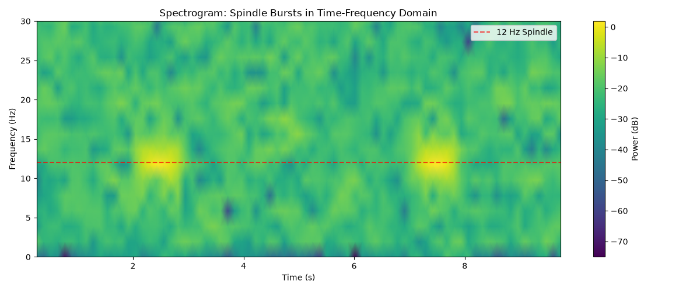
Part 1: SpectrogramBias with Fixed Mask#
Define a TF mask to isolate burst regions
print("\n--- Part 1: Fixed TF Mask (SpectrogramBias) ---")
# Create manually defined TF mask for DSS
# Focus on 10-15 Hz range and burst time windows
nperseg = 128
noverlap = 96
# Get TF grid dimensions
_, t_grid, _ = sp_signal.spectrogram(
data_mixed, fs=sfreq, nperseg=nperseg, noverlap=noverlap
)
n_freqs = nperseg // 2 + 1
n_times_tf = len(t_grid)
# Create mask: 1 where we expect spindles, 0 elsewhere
mask_fixed = np.zeros((n_freqs, n_times_tf))
# Define frequency band (10-15 Hz)
freq_axis = np.fft.rfftfreq(nperseg, 1 / sfreq)
freq_mask = (freq_axis >= 10) & (freq_axis <= 15)
# Define time windows for bursts
time_mask1 = (t_grid >= 2) & (t_grid < 3)
time_mask2 = (t_grid >= 7) & (t_grid < 8)
# Apply mask
mask_fixed[freq_mask[:, None] & (time_mask1 | time_mask2)] = 1.0
print(f"TF mask shape: {mask_fixed.shape}")
print(
f"Masked points: {mask_fixed.sum()} / {mask_fixed.size} "
f"({100 * mask_fixed.sum() / mask_fixed.size:.1f}%)"
)
# Visualize mask
plot_time_frequency_mask(
mask_fixed,
t_grid,
freq_axis,
title="SpectrogramBias Mask: 10-15 Hz Spindles",
show=False,
)
plt.show()
# Apply SPectrogramBias with DSS
# For demonstration, create multi-channel data
n_channels = 8
data_multichan = np.tile(data_mixed, (n_channels, 1)) + rng.normal(
0, 0.2, (n_channels, n_times)
)
# Create MNE Raw with montage for DSS
ch_names = ["Fz", "Cz", "Pz", "F3", "F4", "C3", "C4", "Oz"]
info = mne.create_info(ch_names, sfreq, "eeg")
montage = mne.channels.make_standard_montage("standard_1020")
info.set_montage(montage)
raw_spindle = mne.io.RawArray(data_multichan, info)
# Apply SpectrogramBias
bias_tf = SpectrogramBias(mask=mask_fixed, nperseg=nperseg, noverlap=noverlap)
dss_tf = DSS(n_components=3, bias=bias_tf)
dss_tf.fit(raw_spindle)
print(f"\nDSS Eigenvalues: {dss_tf.eigenvalues_[:3]}")
# Visualize DSS components
plot_component_summary(
dss_tf,
data=raw_spindle,
info=raw_spindle.info,
picks=np.arange(len(raw_spindle.ch_names)),
n_components=2,
show=False,
)
plt.gcf().suptitle("SpectrogramBias: DSS Components")
plt.show()
# Extract component
sources_tf = dss_tf.transform(raw_spindle)
comp0_tf = sources_tf[0]
# Compare with ground truth
if np.corrcoef(comp0_tf, signal_spindle)[0, 1] < 0:
comp0_tf *= -1
corr_tf = np.corrcoef(comp0_tf, signal_spindle)[0, 1]
print(f"Correlation with ground truth: {corr_tf:.3f}")
# Spectrogram comparison
raw_orig = mne.io.RawArray(data_mixed[np.newaxis, :], mne.create_info(1, sfreq, "eeg"))
raw_comp = mne.io.RawArray(comp0_tf[np.newaxis, :], mne.create_info(1, sfreq, "eeg"))
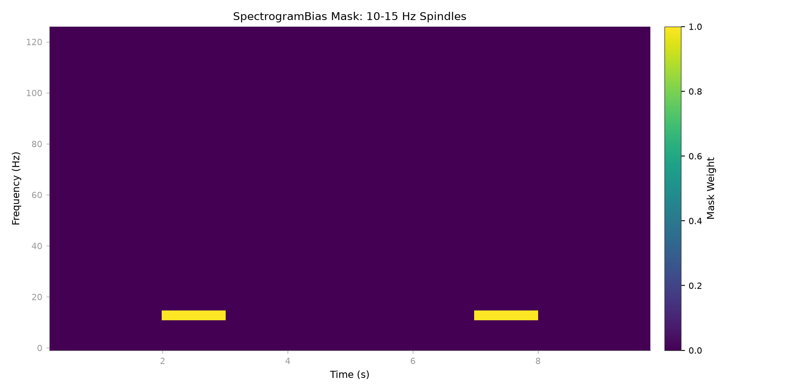
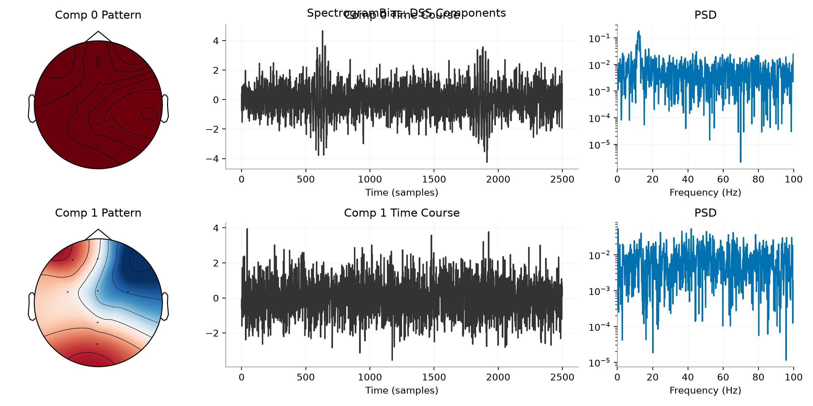
--- Part 1: Fixed TF Mask (SpectrogramBias) ---
TF mask shape: (65, 75)
Masked points: 32.0 / 4875 (0.7%)
Creating RawArray with float64 data, n_channels=8, n_times=2500
Range : 0 ... 2499 = 0.000 ... 9.996 secs
Ready.
DSS Eigenvalues: [0.18872036 0.01285285 0.00731457]
Correlation with ground truth: 0.512
Creating RawArray with float64 data, n_channels=1, n_times=2500
Range : 0 ... 2499 = 0.000 ... 9.996 secs
Ready.
Creating RawArray with float64 data, n_channels=1, n_times=2500
Range : 0 ... 2499 = 0.000 ... 9.996 secs
Ready.
plot_spectrogram_comparison(
raw_orig,
raw_comp,
picks=[0],
times=raw_orig.times,
fmin=5,
fmax=20,
show=False,
)
plt.gcf().suptitle("Spectrogram Comparison: Original vs Extracted Spindles")
plt.show()
# Plot comparison
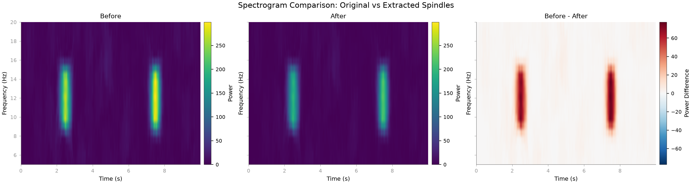
plot_signal_overlay(
signal_spindle,
comp0_tf,
times=times,
title="Spindle Reconstruction: Ground Truth vs SpectrogramBias Component",
scale_after=True,
show=False,
)
plt.show()
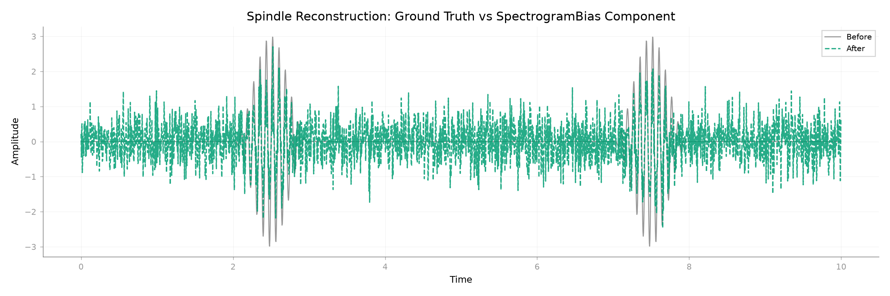
Part 2: SpectrogramDenoiser + IterativeDSS (Adaptive)#
Automatically find TF regions with high energy
print("\n--- Part 2: Adaptive TF Masking (SpectrogramDenoiser) ---")
# SpectrogramDenoiser keeps only top percentile of TF energy
spec_denoiser = SpectrogramDenoiser(
threshold_percentile=90, # Keep top 10%
nperseg=128,
noverlap=96,
)
# Use with IterativeDSS on original spindle data
idss_spec = IterativeDSS(denoiser=spec_denoiser, n_components=2, max_iter=3)
idss_spec.fit(raw_spindle)
print("IterativeDSS with SpectrogramDenoiser converged")
sources_idss = idss_spec.transform(raw_spindle)
comp0_idss = sources_idss[0]
if np.corrcoef(comp0_idss, signal_spindle)[0, 1] < 0:
comp0_idss *= -1
corr_idss = np.corrcoef(comp0_idss, signal_spindle)[0, 1]
print(f"Correlation with ground truth: {corr_idss:.3f}")
# Compare both methods
fig, axes = plt.subplots(3, 1, figsize=(14, 9), sharex=True)
axes[0].plot(times, signal_spindle, "k", linewidth=2, label="Ground Truth")
axes[0].set_title("Ground Truth: Spindle Bursts")
axes[0].set_ylabel("Amplitude")
axes[0].legend()
axes[0].grid(True, alpha=0.3)
axes[1].plot(
times,
comp0_tf * (np.std(signal_spindle) / np.std(comp0_tf)),
"b",
label=f"Fixed Mask (r={corr_tf:.3f})",
)
axes[1].set_title("SpectrogramBias: Fixed TF Mask")
axes[1].set_ylabel("Amplitude")
axes[1].legend()
axes[1].grid(True, alpha=0.3)
axes[2].plot(
times,
comp0_idss * (np.std(signal_spindle) / np.std(comp0_idss)),
"r",
label=f"Adaptive Mask (r={corr_idss:.3f})",
)
axes[2].set_title("SpectrogramDenoiser: Adaptive TF Masking")
axes[2].set_xlabel("Time (s)")
axes[2].set_ylabel("Amplitude")
axes[2].legend()
axes[2].grid(True, alpha=0.3)
plt.tight_layout()
plt.show()
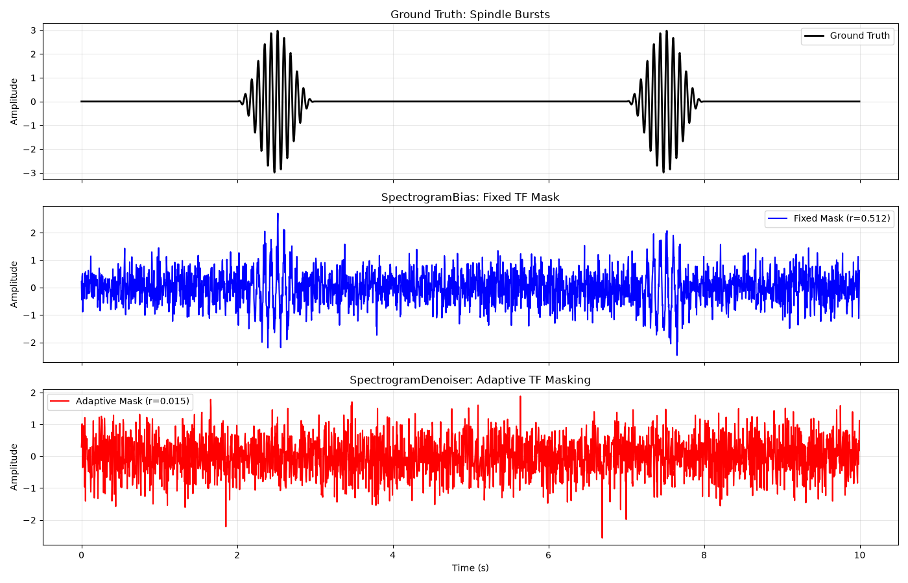
--- Part 2: Adaptive TF Masking (SpectrogramDenoiser) ---
IterativeDSS with SpectrogramDenoiser converged
Correlation with ground truth: 0.015
Part 3: Real MEG Gamma Bursts (Somato Dataset)#
Extract transient gamma oscillations
print("\n--- Part 3: Real MEG Data (Gamma Bursts) ---")
# Download somato dataset (will skip if already downloaded)
data_path = somato.data_path(verbose=True)
raw_path = data_path / "sub-01" / "meg" / "sub-01_task-somato_meg.fif"
raw_somato = mne.io.read_raw_fif(raw_path, preload=True, verbose=False)
raw_somato.pick_types(meg="grad", eeg=False, eog=False, stim=False, exclude="bads")
# Use broader band and keep more data
raw_somato.filter(1, 100, fir_design="firwin", verbose=False) # Broad band first
raw_somato.crop(0, 60) # 60 seconds for more data
print(f"MEG Data: {len(raw_somato.ch_names)} channels, {raw_somato.times[-1]:.1f}s")
# Apply SpectrogramDenoiser
spec_denoiser_meg = SpectrogramDenoiser(
threshold_percentile=95, # Top 5% of TF energy
nperseg=256,
)
idss_meg = IterativeDSS(denoiser=spec_denoiser_meg, n_components=3, max_iter=3)
idss_meg.fit(raw_somato)
print("\nIterativeDSS on MEG data converged")
# Visualize (skip topomaps - use time series)
sources_meg = idss_meg.transform(raw_somato)
# Create Raw for visualization
comp_raw_meg = mne.io.RawArray(
sources_meg[:1], mne.create_info(1, raw_somato.info["sfreq"], "misc")
)
raw_single_meg = raw_somato.copy().pick([0])
# --- Time Course Comparison ---
plot_channel_time_course_comparison(
raw_single_meg,
comp_raw_meg,
picks=[0],
times=raw_single_meg.times,
start=0,
stop=int(5 * raw_single_meg.info["sfreq"]),
show=False,
)
plt.gcf().suptitle("Real MEG: Original vs TF-DSS Component 0 (Gamma Bursts)")
plt.show()
# --- Spectrogram Comparison (Pre/Post) ---
# Compares broadband raw data vs the broadband component
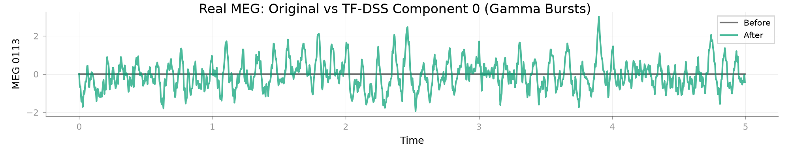
--- Part 3: Real MEG Data (Gamma Bursts) ---
NOTE: pick_types() is a legacy function. New code should use inst.pick(...).
MEG Data: 204 channels, 60.0s
IterativeDSS on MEG data converged
Creating RawArray with float64 data, n_channels=1, n_times=18019
Range : 0 ... 18018 = 0.000 ... 59.999 secs
Ready.
plot_spectrogram_comparison(
raw_single_meg,
comp_raw_meg,
picks=[0],
times=raw_single_meg.times,
fmin=1,
fmax=100,
show=False,
)
plt.gcf().suptitle("Spectrogram Comparison: Raw Data vs Extracted Component")
plt.show()
# --- Component Spectrogram (Single Component TFR) ---
# Zoom into the component's frequency content
freqs = np.arange(10, 50, 2)
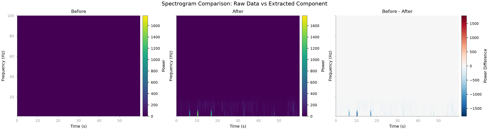
plot_component_spectrogram(
sources_meg[0],
sfreq=raw_somato.info["sfreq"],
freqs=freqs,
title="TF-DSS Component 0: Extracted Transient Oscillations",
show=False,
)
plt.show()
# --- Full Component Summary (with Topomaps!) ---
# Now that we have info, we can show topomaps
# Note: IterativeDSS stores patterns, so plot_component_summary can extract them.
print("\nPlotting full component dashboard (including Topomaps)...")
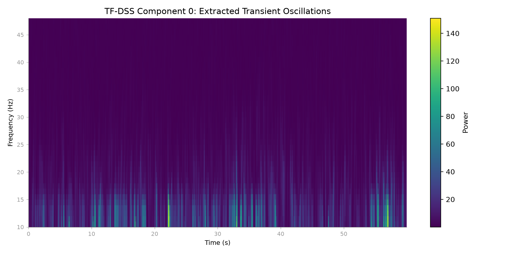
Plotting full component dashboard (including Topomaps)...
plot_component_summary(
idss_meg,
data=raw_somato,
info=raw_somato.info,
picks=np.arange(len(raw_somato.ch_names)),
n_components=1,
show=False,
)
plt.gcf().suptitle("TF-DSS Component 0 Dashboard")
plt.show()
print("\nSuccessfully extracted transient gamma oscillations using TF masking!")
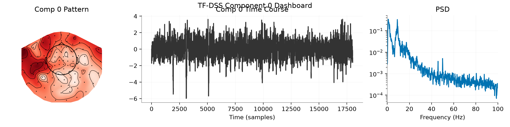
Successfully extracted transient gamma oscillations using TF masking!
Total running time of the script: (0 minutes 8.730 seconds)